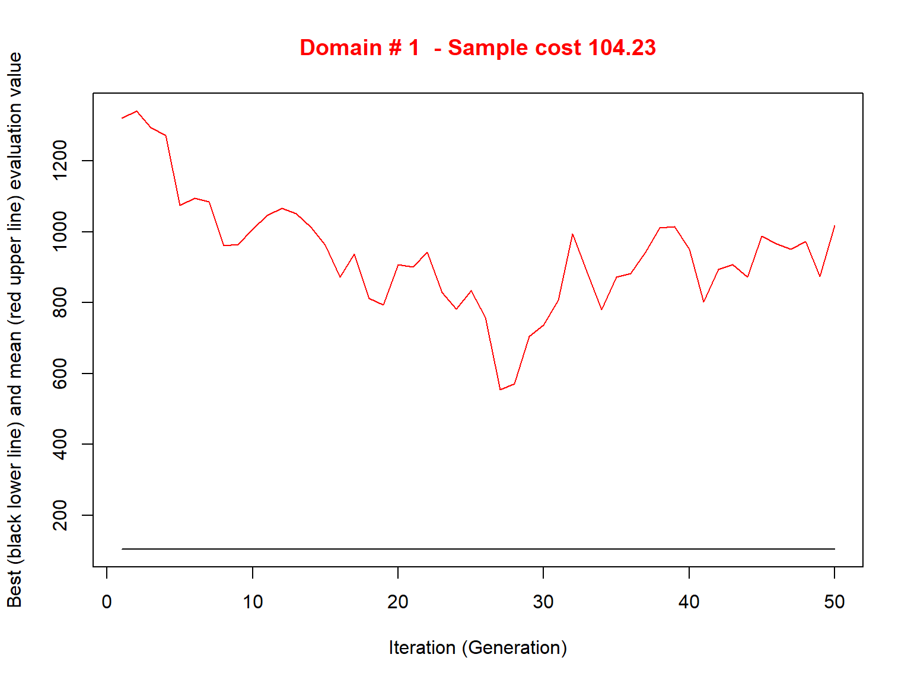

Use of models in SamplingStrata
Giulio Barcaroli
2020-01-14
models.RmdHandling Anticipated Variance
When optimizing the stratification of a sampling frame, values of the target variables Y’s are supposed to be available for the generality of the units in the frame, or at least for a sample of them by means of which it is possible to estimate means and standard deviation of Y’s in atomic strata. Of course, this assumption is seldom expected to hold. The situation in which some proxy variables are available in the frame is much more likely to happen. In these situations, instead of directly indicating the real target variables, proxy ones are named as Y’s. By so doing, there is no guarantee that the final stratification and allocation can ensure the compliance to the set of precision constraints.
In order to take into account this problem, and to limit the risk of overestimating the expected precision levels of the optimized solution, it is possible to carry out the optimization by considering, instead of the expected coefficients of variation related to proxy variables, the anticipated coefficients of variation (ACV) that depend on the model that is possile to fit on couples of real target variables and proxy ones. In the current implementation, only models linking continuous variables can be considered. The definition and the use of these models is the same that has been implemented in the package stratification (see Baillargeon and Rivest 2014). In particular, the reference here is to two different models, the linear model with heteroscedasticity:
\[Y=\beta\times X + \epsilon\]
where
\[\epsilon \sim N(0,\sigma^{2\gamma})\]
(in case \(\gamma = 0\), then the model is homoscedastic)
and the loglinear model:
\[Y= \exp (\beta \times log(X) + \epsilon)\]
where
\[\epsilon \sim N(0,\sigma^{2})\]
In order to make evident the importance of the above, consider the following example, based on the dataset swissmunicipalities available in the package.
library(SamplingStrata)
data("swissmunicipalities")
swissmunicipalities$id <- c(1:nrow(swissmunicipalities))
swissmunicipalities$dom <- 1Let us assume that in the sampling frame only variable total population is available for all municipalities, while industrial area and buildings area are available only on a sample of 500 municipalities.
In this subset we can fit models between POPTOT and the two variables that we assume are the target of our survey.
One model for industrial area and total population:
##
## Call:
## lm(formula = swiss_sample$Airind ~ swiss_sample$POPTOT)
##
## Residuals:
## Min 1Q Median 3Q Max
## -48.466 -2.233 -1.400 0.502 82.261
##
## Coefficients:
## Estimate Std. Error t value Pr(>|t|)
## (Intercept) 1.115e+00 4.305e-01 2.59 0.00988 **
## swiss_sample$POPTOT 2.457e-03 9.303e-05 26.41 < 2e-16 ***
## ---
## Signif. codes: 0 '***' 0.001 '**' 0.01 '*' 0.05 '.' 0.1 ' ' 1
##
## Residual standard error: 8.309 on 498 degrees of freedom
## Multiple R-squared: 0.5835, Adjusted R-squared: 0.5827
## F-statistic: 697.7 on 1 and 498 DF, p-value: < 2.2e-16and one model for buildings area and total population:
##
## Call:
## lm(formula = swiss_sample$Airbat ~ swiss_sample$POPTOT)
##
## Residuals:
## Min 1Q Median 3Q Max
## -143.380 -12.223 -4.391 7.336 208.728
##
## Coefficients:
## Estimate Std. Error t value Pr(>|t|)
## (Intercept) 1.968e+01 1.320e+00 14.90 <2e-16 ***
## swiss_sample$POPTOT 1.192e-02 2.854e-04 41.78 <2e-16 ***
## ---
## Signif. codes: 0 '***' 0.001 '**' 0.01 '*' 0.05 '.' 0.1 ' ' 1
##
## Residual standard error: 25.49 on 498 degrees of freedom
## Multiple R-squared: 0.778, Adjusted R-squared: 0.7776
## F-statistic: 1745 on 1 and 498 DF, p-value: < 2.2e-16We calculate the heteroscedasticity index and associated prediction standard error for both models:
airind <- computeGamma(mod_Airind_POPTOT$residuals,
swiss_sample$POPTOT,
nbins = 10)
## gamma sigma r.square
## 0.79952447 0.01229547 0.99476123airbat <- computeGamma(mod_Airbat_POPTOT$residuals,
swiss_sample$POPTOT,
nbins = 10)
## gamma sigma r.square
## 0.6419641 0.1220129 0.9535845We define the sampling frame in this way:
frame <- buildFrameDF(swissmunicipalities,
id="id",
X="id",
Y=c("POPTOT","POPTOT"),
domainvalue = "dom")that is, we replicate twice the variable GDP because it will be used once for infant mortality and once for contraception.
We set 10% and 5% precision constraints on these variables:
cv <- as.data.frame(list(DOM=rep("DOM1",1),
CV1=rep(0.10,1),
CV2=rep(0.05,1),
domainvalue=c(1:1)
))
cv## DOM CV1 CV2 domainvalue
## 1 DOM1 0.1 0.05 1We now proceed in building the strata dataframe using the models:
model <- NULL
model$beta[1] <- mod_Airind_POPTOT$coefficients[2]
model$sig2[1] <- airind[2]^2
model$type[1] <- "linear"
model$gamma[1] <- airind[1]
model$beta[2] <- mod_Airbat_POPTOT$coefficients[2]
model$sig2[2] <- airbat[2]^2
model$type[2] <- "linear"
model$gamma[2] <- airbat[1]
model <- as.data.frame(model)
model## beta sig2 type gamma
## 1 0.00245734 0.0001511787 linear 0.7995245
## 2 0.01192162 0.0148871469 linear 0.6419641strata <- buildStrataDF(frame, model = model, progress = FALSE)##
## Computations are being done on population data
##
## Number of strata: 2896
## ... of which with only one unit: 2896head(strata)## STRATO N M1 M2 S1 S2 COST CENS DOM1 X1
## 1 1 1 892.685342 4330.80350 342.994959 452.76794 1 0 1 1
## 10 10 1 99.220025 481.35934 59.219151 110.50409 1 0 1 10
## 100 100 1 27.822006 134.97661 21.426738 48.85160 1 0 1 100
## 1000 1000 1 3.695840 17.93012 4.266116 13.36856 1 0 1 1000
## 1001 1001 1 3.688468 17.89436 4.259311 13.35144 1 0 1 1001
## 1002 1002 1 3.683553 17.87051 4.254773 13.34001 1 0 1 1002We proceed with the optimization
kmean <- KmeansSolution(strata,cv,maxclusters=10,showPlot=FALSE)##
## -----------------
## Kmeans solution
## -----------------
## *** Domain: 1 ***
## Number of strata: 10
## Sample size : 107nstrat <- tapply(kmean$suggestions, kmean$domainvalue,
FUN=function(x) length(unique(x)))
solution <- optimStrata(
method = "atomic",
errors = cv ,
framesamp = frame,
model = model,
iter = 50,
pops = 20,
parallel = FALSE,
suggestions = kmean,
nStrata = nstrat,
showPlot = FALSE,
writeFiles = FALSE)##
## Input data have been checked and are compliant with requirements
##
## Computations are being done on population data
##
## Number of strata: 2896
## ... of which with only one unit: 2896Sequential optimization as parallel = FALSE, defaulting number of cores = 1
## *** Domain : 1 1
## Number of strata : 2896
## ---------------------------------------------
## Optimal stratification with Genetic Algorithm
## ---------------------------------------------
## *** Parameters ***
## ---------------------------
## Domain: 1
## Maximum number of strata: 10
## Minimum number of units per stratum: 2
## Take-all strata (TRUE/FALSE): FALSE
## number of sampling strata : 2896
## Number of target variables: 2
## Number of domains: 1
## Number of GA iterations: 50
## Dimension of GA population: 20
## Mutation chance in GA generation: NA
## Elitism rate in GA generation: 0.2
## Chance to add strata to maximum: 0
## Allocation with real numbers instead of integers: TRUE
## *** Sample cost: 104.2297
## *** Number of strata: 10
##
## *** Sample size : 105
## *** Number of strata : 10
## ---------------------------What about the expected CV’s?
newstrata <- updateStrata(strata,solution)
framenew <- updateFrame(frame,newstrata)
framenew <- framenew[order(framenew$ID),]
framenew$Y1 <- swissmunicipalities$Airind
framenew$Y2 <- swissmunicipalities$Airbat
results <- evalSolution(framenew, solution$aggr_strata, 200, progress = FALSE)
results$coeff_var## CV1 CV2 dom
## 1 0.0952 0.0386 DOM1These two CV’s regard respectively industrial area and building area: they are more than compliant with the precision constraints (10% and 5%).
References
Baillargeon, Sophie, and Louis-Paul Rivest. 2014. Stratification: Univariate Stratification of Survey Populations. https://CRAN.R-project.org/package=stratification.